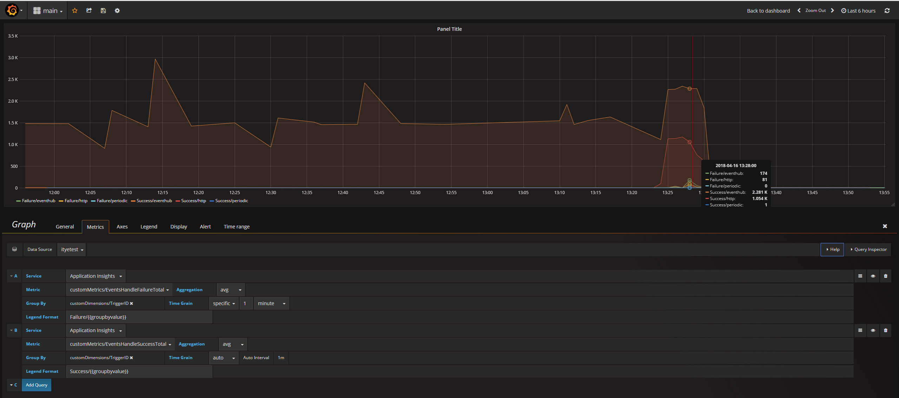

Setting up Nuclio with AKS, Application Insights, and Grafana¶
In This Document¶
Application Insights overview
Create a new Application Insights account and obtain the instrumentation key
Set up Nuclio on Microsoft's Azure Container Service (AKS)
Send metrics telemetry to Azure Application Insights
Configure Nuclio Logger to send logs to Application Insights
Visualize your Application Insights using Grafana
Application Insights overview¶
Microsoft Azure Application Insights is an extensible Application Performance Management (APM) service for web developers on multiple platforms. Use it to monitor your live web application. It will automatically detect performance anomalies. It includes powerful analytics tools to help you diagnose issues and to understand what users actually do with your app. It's designed to help you continuously improve performance and usability. It works for apps on a wide variety of platforms including .NET, Node.js and J2EE, hosted on-premises or in the cloud. For more information about Application Insights, see Microsoft's product overview.
Create a new Application Insights account and obtain the instrumentation key¶
See the Application Insights documentation for information on how to set up a new Application Insights account, and obtain your instrumentation key, as you'll use it later in the guide.
Set up Nuclio on Microsoft's Azure Container Service (AKS)¶
For detailed information on setting up in Nuclio with Microsoft's Azure Container Service (AKS), see Getting Started with Nuclio on Azure Container Service (AKS).
Send metrics telemetry to Azure Application Insights¶
Nuclio abstracts the metrics sink. You inject into the platform config which metric implementation to use, and the Nuclio internal communicates with the abstract layer of the metrics sink, agnostic to the implementation.
Configuring the platform¶
In Kubernetes, a platform configuration is stored as a ConfigMap named platform-config in the namespace of the function.
You'll create a ConfigMap in the Nuclio namespace from a local file called platform.yaml.
Create a new file on your computer called platform.yaml. The system expects this specific name.
Place the following yaml code in this file:
metrics:
sinks:
myAppInsights:
kind: appinsights
attributes:
interval: 2s
instrumentationKey: <YOUR-INSTUMENTATION-KEY-HERE>
maxBatchSize: 1024
maxBatchInterval: 5s
system:
- myAppInsights
functions:
- myAppInsights
The configuration makes use of the instrumentation key you obtained earlier in this guide.
Navigate to the location of your platform.yaml file and run the following kubectl command:
kubectl create configmap platform-config --namespace nuclio --from-file platform.yaml
At this stage, all metrics will be sent to application insights custom metrics table. To read more about platform configuration click here
Configure Nuclio Logger to send logs to Application Insights¶
The logger sink is configured in a similar way to the metrics sink.
Edit your platform.yaml file from the previous step,and append to it the following code:
logger:
sinks:
stdout:
kind: stdout
myAppInsightsLogger:
kind: appinsights
attributes:
instrumentationKey: <YOUR-INSTUMENTATION-KEY-HERE>
maxBatchSize: 1024
maxBatchInterval: 5s
system:
- level: debug
sink: stdout
- level: info
sink: myAppInsightsLogger
functions:
- level: info
sink: myAppInsightsLogger
The configuration makes use of the instrumentation key you obtained earlier in this guide.
Navigate to the location of your platform.yaml file and run the following kubectl command:
kubectl create configmap platform-config --namespace nuclio --from-file platform.yaml
At this stage, all logs will be sent to application insights traces table.
For example, to use the logger in your function, you can simply add the following:
context.Logger.InfoWith("Some message", "arg1", 1, "arg2", 2)
To read more about platform configuration click here
Visualize your Application Insights using Grafana¶
Grafana is the leading tool for querying and visualizing time series and metrics.
To use Grafana, you first need to install it in your cluster.
You'll do this by using helm, the package manager for Kubernetes, and the Grafana chart.
If you are unfamiliar with helm, read more about it here.
To allow Grafana to display data from Application Insights, the Azure Monitor plugin, developed by Grafana, is required.
To add the plugin, create a new file named values.yaml. Copy the following values to this file, and edit relevant values, such as persistence, adminUser, adminPassword, and plugins.
replicas: 1
image:
repository: grafana/grafana
tag: 5.0.4
pullPolicy: IfNotPresent
downloadDashboardsImage:
repository: appropriate/curl
tag: latest
pullPolicy: IfNotPresent
service:
type: ClusterIP
port: 80
annotations: {}
ingress:
enabled: false
annotations: {}
# kubernetes.io/ingress.class: nginx
# kubernetes.io/tls-acme: "true"
path: /
hosts:
- chart-example.local
tls: []
resources: {}
nodeSelector: {}
tolerations: []
affinity: {}
persistence:
enabled: true
storageClassName: default
accessModes:
- ReadWriteOnce
size: 10Gi
adminUser: admin
adminPassword: strongpassword
env: {}
plugins: "grafana-azure-monitor-datasource"
dashboardProviders: {}
dashboards: {}
grafana.ini:
paths:
data: /var/lib/grafana/data
logs: /var/log/grafana
plugins: /var/lib/grafana/plugins
analytics:
check_for_updates: true
log:
mode: console
grafana_net:
url: https://grafana.net
To install Grafana, run the following command:
helm install stable/grafana --values values.yaml
When the pod is up and running, you can access the web console. To do that, first find the name of the Grafana:
kubectl get pods
Then run the following port-forward command to browse the web console:
kubectl --namespace default port-forward <REPLACE-WITH-GRAFANA-POD-NAME> 3000
Now, browse to http://127.0.0.1:3000/ and log in using the admin username and password you provided in the values.yaml file.
Verify that Azure Monitor exists in the plugins page.
Configure a data source using the plugin support page.
Finally, see the provided sample Grafana JSON file (grafana-sample-dashboard.json), which you can import from the Grafana dashboard: from the menu (plus icon - +) select Create > Import and upload the sample JSON file.

Further metric analysis using Application Insights¶
Go to your Application Insights account. You'll be able to query your tables for information. The query language is using Kusto.
Following are a few samples to quickly start querying:
customMetrics
| where name == "EventsHandleSuccessTotal" and timestamp > now(-1d)
| extend trigger = tostring(customDimensions.TriggerID)
| summarize sum(value) by trigger
| render piechart
customMetrics
| where name == "FunctionDuration" and timestamp > now(-1d)
| extend workerIndex = tostring(customDimensions.WorkerIndex)
| project timestamp, value ,valueCount, workerIndex